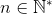
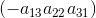
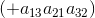
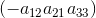
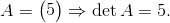
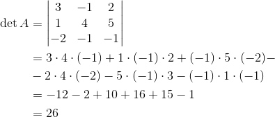
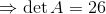

Determinantul unei matrice pătratice
Definiția și calculul unui determinant
Fie matricea pătratică , , .
Definiția M19: Determinantul unei matrice
Numim determinantul matricei  numărul
numărul
,
care are formule diferite în funcție de  .
.
Numărul se numește ordinul determinantului.
De cele mai multe ori, vom avea de calculat determinanți de ordin  sau
sau  , pentru care există algoritmi speciali.
, pentru care există algoritmi speciali.
Observație:
Dacă , atunci determinantul de ordinul întâi al matricei este .
În continuare, vom trata problema calculului determinantului unei matrice pătratice de dimensiuni și respectiv al unei matrice pătratice de dimensiuni .
1. Pentru  .
.
Dacă , atunci determinantul se calculează astfel:
.
2. Pentru  .
.
Dacă , atunci determinantul acestei matrice se calculează astfel:

La formula determinantului de ordinul putem ajunge prin metode: regula lui Sarrus și regula triunghiului, reguli pe care le vom descrie pas cu pas.
Regula lui Sarrus
- la forma inițială a determinantului se mai adaugă primele două linii dedesubtul celei de-a treia;
- se însumează produsele termenilor situați pe diagonala principală și pe cele de pe liniile paralele cu diagonala principală ;
- se scad produsele termenilor situați pe diagonala secundară și pe cele de pe liniile paralele cu diagonala secundară ;
- la final, vom obține:
Regula lui Sarrus este ilustrată în imaginea de mai jos: se însumează produsele termenilor de pe liniile marcate cu albastru și se scad produsele termenilor marcați cu roșu.

Regula triunghiului
- se însumează produsele termenilor de pe diagonala principală și pe cele din vârfurile "triunghiurilor" care au bazele paralele cu diagonala principală ;
- se scad produsele termenilor de pe diagonala secundară  și pe cele din vârfurile "triunghiurilor" care au bazele paralele cu diagonala secundară .
Regula descrisă este ilustrată mai jos, indicând pas cu pas constituirea fiecărui produs.


Așadar,
Exemple:
- 

.
În concluzie, atunci când întâlnești probleme care presupun calcularea unui determinant, vei proceda astfel:
- identifici ordinul determinantului (adică numărul liniilor sau al coloanelor);
- dacă ai de calculat un determinant de ordinul , vei folosi formula
;
- dacă vei avea de aflat valoarea unui determinant de ordinul , poți folosi sau regula lui Sarrus, sau regula triunghiului, descrise anterior; valoarea unui determinant de ordinul este dată de formula:
În continuare, vei găsi definiții, proprietăți și exemple referitoare la: